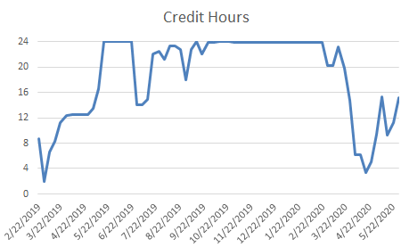

You should work every hour you get paid for and get paid for every hour you work. We do not
want you working on time that you aren't "on the clock". We track time in 6 minute increments
(i.e. .1 hours). Don't start or end work on odd minutes and always round to favor the work time.
For example if you arrived at work at 8:37am and then took off for lunch at 12:11pm you would
record work time 0842-1206 (i.e. 8.7-12.1 or 3.4 hours). You might notice that somewhere in that
mix you lost .1 hours of actual work time. Practice logging in/out on those 6 minute marks.
If you have worked on a minute-to-minute basis before and are still bothered by the lost minutes,
just be comforted by how nice the government salary is and be like Elsa.
After your first years as an employee it is really hard for you to do anything that will lead to your immediate unemployment. Time card fraud is one of them. Please keep your time faithfully and truthfully. Everyone messes up from time to time and forgets to write down their actual start time. Use your own records (emails, meetings you were in, etc.) to get the time right. NEVER lie about your time. You do not want to be that person and be fired from a good job because of dishonesty. Please. Just. Don't.
Your normal work schedule is 8 hours each day, Monday through Friday for a total of 40 hours each work week. In general we expect you to be working during "core hours" (9am to 2pm). This won't really apply during COVID, the goal is that if you are needed by someone else, you will both be working during the same hours of the day. Even without COVID, however, you have a lot of freedom to go to work early (6am-2pm) or late (9am-5pm). With the approval of your manager some people even start the day later (11am-7pm). This is known as "flex time". In effect, we are saying we trust you to manage your own time.
This flexibility also extends to working more or less than 8 hours each workday, or even the weekend. You do earn sick and leave time every two-week pay period, but we want you to have more freedom than that. We want you to be able to plan ahead and control your own schedule as much as possible. To that end, we have "credit hours" that you can earn by working extra time. Let's say that because of COVID you are really into whatever you are currently working, but your 8 hour day is already over. You can keep working and finish an hour later. That hour is a credit hour that you can take back any time you like. Maybe you decide to work only seven hours the next day. Maybe you keep all the hours for many weeks. It is your credit hour and we will respect your decision to use that time as you please.
There is a cap of 24 credit hours that you can earn. This is actually pretty hard to do. Most
people use or earn a couple of credit hours each week as they leave early to go to a school play
or stay late to bank some extra time. As long as you stay within that 24 hour cap, you are free
to make those decisions yourself. This graph shows the weekly credit hour balance for one person
over the last year. Some months you earn or use 8 hours in spite of the smaller fluctuations.
During very busy periods you may use a couple of credit hours, but you earn them back just as
quickly. When things slow down you might take time again. You have the freedom to manage your
own time.

In managing your time, and especially during COVID you have some rules to consider. First, always communicate with your manager what you are going to do. If you want to take of Friday using credit hours to attend your Nana's birthday, do it. Just be sure to tell everyone that you won't be at work that day. Who might want to know? At a minimum your manager needs to know and approve. This helps to keep track of where you are in case there is an emergency. Whoever gives you work direction (also known as your "task lead") should probably know as well. This is to ensure that he/she can compensate for your absence.
When and why do you need approval for leave? Technically you are requesting leave from your manager--even to use your credit hours. For small amounts of leave (<2 hours), no one will care, but it is still nice to communicate. For larger amounts you could be rejected. In practice this doesn't happen because you communicate large periods of time off well ahead of time. Given notice, people will compensate. The only reason a leave request will every be rejected is if there is a mission critical need. Again, in practice this doesn't happen, but it could happen. Usually, if there is anything mission critical, you will know, vacations get cancelled, and leave get's taken another time.
While teleworking, you have a couple of other restrictions. Normally you have to communicate with everyone that you will be teleworking a certain day. At the very least you need to work with your manager if you want to telework a couple of extra hours in the evening. All this has been changed by COVID and your leaders assume that you will be teleworking unless you tell them otherwise. You still need to communicate what your work hours are. Each morning you should send an email to your manager and task lead telling them:
After you finish working, you need to send another email telling them:
Welcome to the world of "knowledge workers" where most of your "work" is done in your head. Because a lot of our time is spent thinking about things and not making anything, it is even more important that you develop products. If you were a builder you could point to the wall you framed. In this work, you need to point to the documents you write and the scripts you code. You can either send them, send a link to them, or just tell your manager what you did, but you should usually have products for each day.